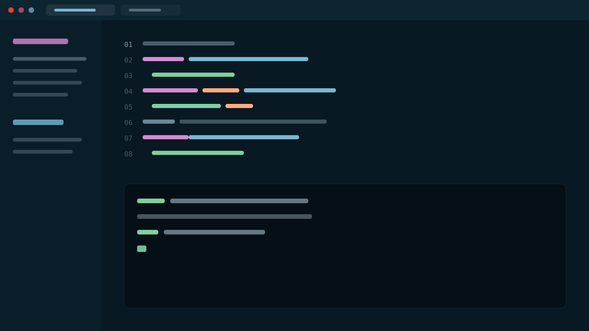

认版式
开场、章节、内容、截图、过场、结束——每页一种，抄走改字就能用。
你的名字
Agenda
示例稿本身就是说明书：先看版式，再学放映和导出，最后把内容换成你的。每一页的备注栏都写着这页在演示什么。
开场、章节、内容、截图、过场、结束——每页一种，抄走改字就能用。
翻页、总览、演讲者视图、逐段点亮的代码，全是键盘快捷键，按 ? 随时查。
只动 index.html 和 css/custom.css：内容、换色、字体都在这两个文件里。
你的团队 · 你的城市
10+年写代码，若干年讲课
可选 · 双讲者版式
2?讲得少的那位放右边
Part One
内容页的正文不是自由排版，而是往「版式槽」里填：卡片、数字、时间线、路径图、标签、金句、链接卡、代码、双栏、整页截图。这章各来一遍。
版式组件 · 数字
数字比形容词有说服力。三块瓷砖各配一行小字，颜色自动按强调色—过渡色—深色递进。
每页最底下那根深色结论条就是它——这句通常是你希望观众唯一记住的话，所以留到最后按 → 再亮（本页正在演示 fragment 步进）。
版式组件 · 卡片
不放数字的并列事实用 facts：三栏各一段，顶线条纹按强调色轮换。HTML 里的 init 类还能把缩写逐字母点亮，像这四个字母。
并列的事实、流程、对照都走卡片；两栏放不下就三栏，六张卡自动排两行。
截图嵌在文字旁用 shot-inline，整页只放一张图用 screen——录屏 GIF 也走这两个槽。
代码块自带语法高亮，data-lines 声明步进分组，按 → 逐段点亮、未点到的行压暗不隐藏。
标题区 + 一个正文槽 + 可选的 takeaway，就是一张内容页的全部结构；你决定往槽里放什么。
版式组件 · 时间线
历史、路线图、演进史放这：竖轴自动渐变，圆点颜色按条目轮换，第三列是自由正文。
larshp 为 DSAG 2026 场次写的纯 HTML 幻灯片，无框架无构建。
把演讲专属的样式改写成设计系统：版式、组件、状态三层的通用类名。
从这页开始往后都是你的内容——时间线最多三格，多了就拆两页。
版式组件 · 路径
迁移、对译、前后对比都用这张图：两张节点卡，中间一根带箭头的连接线。三个元素都加了 fragment，按 → 逐个出现。
版式组件 · 标签
不想逐条展开、又想让人看见全貌的时候：一行标签墙，放得下就自动换行。
版式组件 · 金句
slide-sparse 修饰符去掉正文槽，让一句话独占整页。
工具越简单，讲的人越自由——模板的全部野心，是让你忘掉模板。 deck-template
版式组件 · 链接
观众回家以后会点的链接放这：两栏各一张卡，卡片本身就是链接。
版式组件 · 代码
pre 上声明 data-lines="1,2-3,5"（1 基行号，逗号分步、支持区间），按 → 逐段点亮，未点到的行压暗不隐藏，代码块形状不变。
# 三条命令跑起来
python3 -m http.server 8644
# 浏览器打开（或者直接双击 index.html）
open http://127.0.0.1:8644js/highlight.js 自带 bash / json / yaml / diff 语法，几十行、无依赖；代码页建议一页不超过十行，多了拆两页。
版式组件 · 双栏
左边讲机制（mech 节点图），右边放证据（shot-inline 内嵌截图），下面压一根结论条。
内容和引擎物理隔离：讲稿全在 index.html，行为全在 js/——你几乎永远只改前两个文件。
版式组件 · 大图
需要观众看清每个像素的那张图，整页给它：标题只留一行，图片吃掉剩下的全部高度，保持约 16:9 永远高度受限不溢出。
